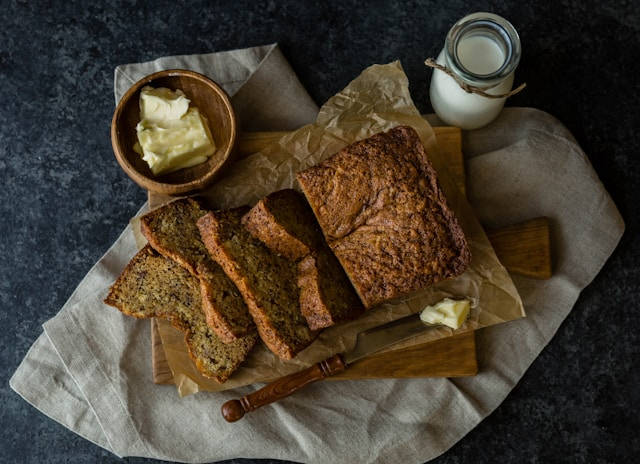

Home
Banana Bread

Description
This banana bread is quick and easy to prepare, and everyone always comes back for seconds!
Ingredients
- Bananas (ripe)
- Sugar
- Egg
- Butter
- Flour
- Baking soda
- Salt
Steps
- Combine the dry ingredients in one bowl and the wet ingredients in another.
- Stir the dry mixture into the wet mixture.
- Pour the batter into a prepared loaf pan and bake.